Python Visualization
Here some python visualization dummy scripts are saved
Data
import matplotlib.pyplot as plt
%matplotlib inline
%config InlineBackend.figure_format = 'png'
import numpy as np
N = 30
x_1 = np.random.randn(N) * 3
x_2 = np.random.randn(N) * 3 + 2
x_3 = np.random.randn(N) * 3 + -2
Work with pandas
import pandas as pd
- create data from numpy matrix
mydat = pd.DataFrame (np.matrix ([x_1,x_2,x_3]).transpose ())
- create data from two numpy arrays
here you need to flatten the arrays first
X = 2 * np.random.rand(100,1)
y = 4 +3 * X+np.random.randn(100,1)
mydat = pd.DataFrame ({'x':X.flatten(), 'y': y.flatten()})
- describe the data
mydat.describe ()
- sort multiple variables in pandas data frames.
df.sort_values(['Year', "Happiness_Score"], ascending=[True, False], inplace=True)
- Set the name of the columns
mydat.columns = ["nomean", "posmean", "negmean"]
mydat.columns
plt.plot(mydat.nomean, c = "lightblue", ls = '--', marker = "o",
ms = 6, label ="nomean")
plt.plot(mydat.posmean, c = "darkorange", ls = '--', marker = "s",
ms = 6, label ="posmean") # ms = marker size
plt.plot(mydat.negmean, c = "lightgreen", ls = '--', marker = "^",
ms = 6, label ="negmean")
plt.legend(loc = 'upper right',bbox_to_anchor = (1,1))
plt.xticks(list(range(20)), rotation = 'vertical') # sets the ticks on
# x-axis and puts
# them vertically.
- get the entry (x,y) in your relational table
mydat.head (5)
mydat.iloc[2,1]
- slicing the data
mydat[0:4]
- get by column
mydat[['nomean', 'posmean']].head (3)
- get by row and column
mydat[['nomean', 'posmean']][::2]
print(mydat[['nomean', 'posmean']].iloc [0,1])
- new column
mydat['sum'] = mydat['nomean'] + mydat['posmean'] + mydat['negmean']
mydat.columns
mydat2 = mydat
mydat.head ()
- drop a column
mydat2.drop ('sum', axis = 1).head ()
- filter through booleans
filt = mydat.nomean < 0
print (mydat[['sum', 'negmean']][filt])
- remove duplicates
print (np.matrix ([[1,2,1],[3,3,3]]).transpose ())
pd.DataFrame (np.matrix ([[1,2,1],[3,3,3]]).transpose ()).iloc[:,1].unique ()
another possibility that addresses data frame wide duplicates and not
simply column duplicates is by leveraging .duplicated () method:
import pandas as pd
romeo = pd.DataFrame({'a': [1,1,3], 'b' : [2,2,3]})
print(romeo)
print(romeo.duplicated())
romeo = pd.DataFrame({'a': [1,1,3], 'b' : [2,4,3]})
print(romeo)
print(romeo.duplicated())
- on the difference between
.ilocand.loc
notice by the way that this are outdated. by now you should use .iat
and .at.
The difference is the following.
.iat : uses the strict position in the matrix
.at : search by index and column names
print (mydat)
mydat.at[0, 'negmean']
mydat.iat[0,2]
To further understand the thing consider
mydat2 = mydat[::2]
mydat2
print (mydat2.at[6, 'nomean']) ## this by real index independent of the axis
print (mydat2.iat[6, 0]) ## this sixth row in the matrix
- categorical variables
This is important for treating them as dummies in regression as well for facetwraps.
mydat.head ()
mydat["category"] = np.repeat (range (4), 5)
mydat.info ()
To transform this into a category use
mydat.category = mydat.category.astype ('category')
mydat.info ()
To view the category types
mydat.category.cat.categories
To check for missing values NaN
## check if there are null values for stream_id column
df_streams[['stream_id']].isnull().values.any()
## get the null values
df_streams[np.array(df_streams[['stream_id']].isnull())]
In order to apply a function sequentially to each entry in a column
dataframe you can use the apply function on pandas dataframe.
For instance for the following dataframe
cust_id.head()
Then you could specify a function return the years since the date in column dob
def age(x):
datetime_object = datetime.strptime(x, '%m/%d/%y')
datetime_now = datetime.today()
return datetime_now.year - datetime_object.year
Finally you can pass the apply function to each row of your
pandas dataframe column by
print(cust_id['dob'].apply (lambda row: age(row)))
cust_id['age'] = cust_id['dob'].apply (lambda row: age(row))
cust_id.head()
dob 1 2 3 4 5 6 \
0 07/30/98 1 Todd Kasen South Carolina m united_states
1 04/12/89 2 Garza Ensley None f singapore
2 09/12/97 3 Carey Lillian Alabama f united_states
3 01/28/99 4 Christensen Beau New York m united_states
4 03/23/98 5 Gibson Ernesto None m singapore
age
22
31
23
21
22
- deleting missing data
In order to delete missing data you can simply rely on the
import pandas as pd
from numpy import nan
df = pd.DataFrame({'name':['apple','banana','orange'],
'price':[1.95, 3.00, nan], 'inventory':[nan, 12, 23]})
print(df)
print ("\nAfter deleting missing values:")
print(df.dropna())
In the above you eliminate the entire row where the missing value occurred.
The above is particular important when missing observations occurs randomly such that you might safely ignore individual observations without increasing the bias of your analysis given your data.
A second possibility, when dealing with missing data consists in
deleting entire features (i.e. columns). You can do that by setting
the argument 'columns' in your .dropna () method
print(df)
print ("\nAfter deleting missing values:")
print(df.dropna(axis = 'columns'))
- impute missing data
a different approach on handling missing data is to impute missing data. This means that instead of removing the data observations you try to replace them with some meaningful information.
This might be useful for instance when understanding that data are not missing at random and you might use the dependency on other features - i.e. a predictive model based on that - to impute missing variables.
Other simpler methods might involve taking simple features means as a data-filler or some simple analogous measure. An example in this sense might be
from sklearn.impute import SimpleImputer
print (df)
features = ['price', 'inventory']
imp = SimpleImputer()
# Use .values attribute bc sklearn works with arrays rather than DataFrames
imp.fit(df[features].values)
print(imp.transform(df[features].values))
where notice that in the above the simple average was taken to replace
missing values. Notice moreover how the standard sklearn API applies -
i.e. the .fit () and .transform () methods.
New dataset
For the next sections I will use the following new dataset
import re
import numpy as np
import pandas as pd
df = pd.read_csv("~/Desktop/Learning/AI_workflow_Coursera/Visualization/world-happiness.csv",index_col=0)
print("df: {} x {}".format(df.shape[0],df.shape[1]))
## clean up the column names and remove some
df.columns = [re.sub("\s+","_",col) for col in df.columns.tolist()]
df.head(n=4)
Country Region Happiness_Rank ... Generosity Dystopia_Residual Year
0 Afghanistan Southern Asia 153.0 ... 0.36510 1.95210 2015
1 Albania Central and Eastern Europe 95.0 ... 0.14272 1.89894 2015
2 Algeria Middle East and Northern Africa 68.0 ... 0.07822 2.43209 2015
3 Angola Sub-Saharan Africa 137.0 ... 0.12344 1.94939 2015
[4 rows x 12 columns]
- view a review of all of the null values
## missing values summary
print("Missing Value Summary\n{}".format("-"*35))
print(df.isnull().sum(axis = 0))
Missing Value Summary ----------------------------------- Country 0 Region 0 Happiness_Rank 25 Happiness_Score 25 Economy_(GDP_per_Capita) 25 Family 25 Health_(Life_Expectancy) 25 Freedom 25 Trust_(Government_Corruption) 25 Generosity 25 Dystopia_Residual 25 Year 0 dtype: int64
-
pivot data frame and create aggregate measures for them (similar to mutate in
dplyr)columns_to_show = ["Happiness_Score","Health_(Life_Expectancy)"] pd.pivot_table(df, index= 'Year',values=columns_to_show,aggfunc='mean').round(3)
- groupby
analogously to the previous version one can compute aggregated measures using the groupby command
df.groupby(['Year'])[columns_to_show].mean().round(3)
Aggregating by multiple columns is straightforward.
pd.pivot_table(df, index = ['Region', 'Year'], values=columns_to_show).round(3)
## or
# df.groupby(['Region', 'Year'])[columns_to_show].mean().round(3)
Finally you can pass a column entry instead of displaying the results as above. This is more user friendly in case you might have to merge the results into other data frames.
pd.pivot_table(df,index='Region',columns='Year',values="Happiness_Score")
- create factor variables out of continuous variables through the
cutmethod.
pd.cut (df['Happiness_Rank'], bins = 4)
- append a column to a dataframe
pd.concat(objs = [df, pd.cut (df['Happiness_Rank'], bins = 4)],
axis = 1)
Sparse Matrices
It is essential for data engineers and data scientists to know how to
work with sparse matrices. This are matrices with many 0 entries and
just a few non-zero entries.
Instead of representing these kind of matrices in their dense
representation i.e. with a bunch of 0 entries you might save the
information in a more compressed way. This will allow to save on
memory on your machines and to effectively work with huge matrices.
Sparse matrices are moreover important for the development of ML jobs. The idea is that once you found a well performing ML model you might create data pipelines that extract transform and load data to your ML model in the desired shape.
At the beginning, when you are exploring the data and trying to come up with a meaningful model it does not make sense to create such data pipelines as the job of coming up with them might be time-consuming and you might end up with no business value added from your ML application.
It is therefore important to postpone the creation of such time consuming tasks at the end. when you have a production ready ML model.
Before of that it is advisable to leverage dumps of data and to explore your system through them. In this sense sparse matrices are especially beneficial when data can be efficiently represented through them. These allow you to store a huge amount of data due to their efficient memory management - i.e. by saving just the relevant portion of your data -.
In python you can work with sparse matrices via:
import numpy as np
from scipy import sparse
Notice that a matrix, is said to be sparse if more than 50% of its entries are 0.
For instance the following matrix is sparse
A = np.random.randint(0,2,100000).reshape(100,1000)
sparcity = 1.0 - (np.count_nonzero(A) / A.size)
print(round(sparcity,4))
There are essentially four types of sparse matrices used for computation.
CSC (Compressed Sparse Column) and CSR (Compressed Sparse Row) are more compact and efficient, but difficult to construct "from scratch".
Coo (Coordinate) and DOK (Dictionary of Keys) are easier to construct, and can then be converted to CSC or CSR via matrix.tocsc() or matrix.tocsr().
CSC is more efficient at accessing column-vectors or column operations, generally, as it is stored as arrays of columns and their value at each row.
CSR matrices are the opposite; stored as arrays of rows and their values at each column, and are more efficient at accessing row-vectors or row operations.
A = np.random.poisson(0.3, (10,100))
B = sparse.coo_matrix(A)
C = B.todense()
print("A",type(A),A.shape,"\n"
"B",type(B),B.shape,"\n"
"C",type(C),C.shape,"\n")
You see that you can transform back and forth from dense matrices to sparse matrices.
Coo sparse matrix built from the COOrdinates and values of the non-zero entries.
print(B)
B = sparse.csc_matrix(A)
print(B)
See that the above respects the column array storage. I.e. the non-zero coordinates are returned column by column.
Like the CSC format there is a CSR format to account for data that repeat along the rows
B = sparse.csr_matrix(A)
print(B)
See that the above respects the row array storage. I.e. the non-zero coordinates are returned row by row.
Notice: that many np.<methods> used for performing matrix operations do not work on sparse matrices. You might refer to this link for checking on how to deal with that. A solution proposed is to transform the sparse matrix in an array.
Finally, it is easy to populate a sparse matrix by
rows = [0,1,2,8] ## coodinates
cols = [1,0,4,8]
vals = [1,2,1,4]
A = sparse.coo_matrix((vals, (rows, cols)))
print(A.todense())
print()
print(A.tocsr())
you can finally stack two sparse matrices, be it horizontally or vertically together.
C = sparse.csr_matrix(np.array([0,1,0,0,2,0,0,0,1]).reshape(1,9))
print(A.shape,C.shape)
print("adding horizontally")
D = sparse.vstack([A,C])
print(D.todense())
print("adding vertically")
D = sparse.hstack([A,C.reshape(9,1)])
print(D.todense())
MatplotLib
plt.plot(x_1, c = "lightblue", ls = '--', marker = "o",
ms = 6, label ="nomean")
plt.plot(x_2, c = "darkorange", ls = '--', marker = "s",
ms = 6, label ="posmean") # ms = marker size
plt.plot(x_3, c = "lightgreen", ls = '--', marker = "^",
ms = 6, label ="negmean")
plt.legend(loc = 'upper right',bbox_to_anchor = (1,1))
plt.xticks(list(range(20)), rotation = 'vertical') # sets the ticks on
# x-axis and puts
# them vertically.
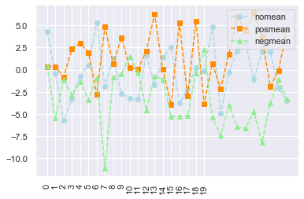
- stacked histograms via matplotlib
plt.hist([mydat[mydat.bitwise == True].nomean,
mydat[mydat.bitwise == False].posmean])
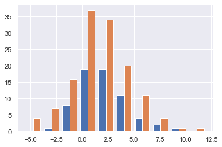
plt.hist([mydat[mydat.bitwise == True].nomean,
mydat[mydat.bitwise == False].posmean],
stacked = True)
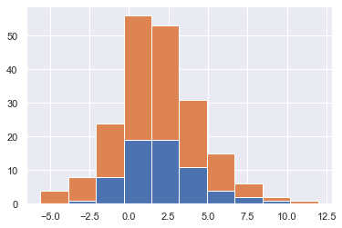
Seaborn
sns.distplot (mydat['nomean'])
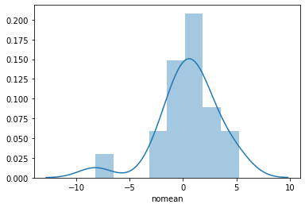
mydat.head ()
g = sns.lmplot(x="posmean", y="sum", data = mydat)

import statsmodels
g = sns.lmplot(x="posmean", y="sum", col="bitwise", hue="bitwise", data=mydat,
y_jitter=.02, truncate=False)
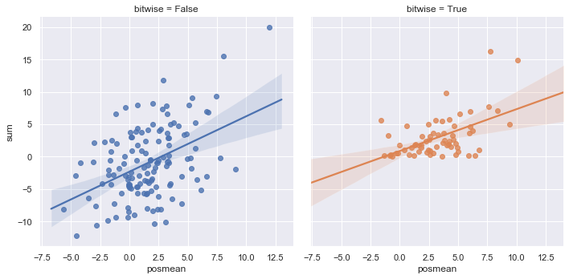
To further inspect different visualization techniques check at the seaborn page.
g = sns.lmplot(x="posmean", y="sum", data = mydat,
hue = 'bitwise', fit_reg = False)
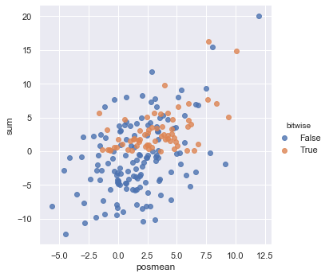
- joinplot for inspecting the density of two functions
g = sns.jointplot (data = mydat, x = 'posmean', y = 'negmean')
g = sns.jointplot (data = mydat, x = 'posmean', y = 'negmean', kind = 'hex')
sns.jointplot (data = mydat, x = 'posmean', y = 'negmean'). \
plot_joint(sns.kdeplot, zorder=3, n_levels=6) ## add isolines
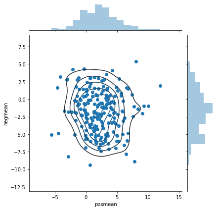
- kdeplot without data
sns.kdeplot (mydat.posmean, mydat.nomean)
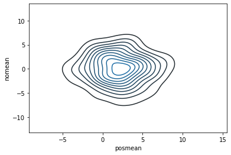
To draw the isolines via colour scale use the shade bool
sns.kdeplot (mydat.posmean, mydat.nomean,
shade = True)
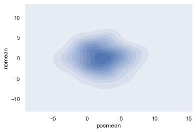
To still see the grids
sns.kdeplot (mydat.posmean, mydat.nomean,
shade = True, shade_lowest = False)
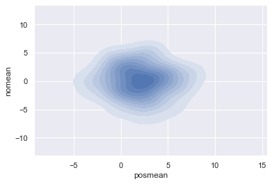
- change the background style
sns.set(style="darkgrid")
sns.kdeplot (mydat.posmean, mydat.nomean)
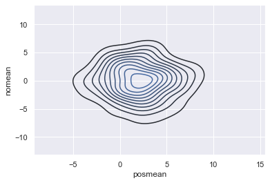
- create subplots
## specify your R par(mfrow=c(x,y))
f, axes = plt.subplots(1,2, figsize = (12, 6))
k1 = sns.kdeplot(mydat.posmean, mydat.nomean, ax = axes[0], cmap = 'Greens')
k2 = sns.kdeplot(mydat.posmean, mydat.negmean, ax = axes[1], cmap = 'Greens')
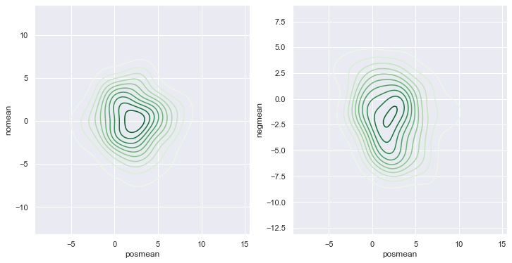
with more columns the axis index becomes more complex.
## specify your R par(mfrow=c(x,y))
f, axes = plt.subplots(2,2, figsize = (12, 6))
k1 = sns.kdeplot(mydat.posmean, mydat.nomean, ax = axes[0,1], cmap = 'Greens')
k2 = sns.kdeplot(mydat.posmean, mydat.negmean, ax = axes[1,0], cmap = 'Greens')
- violinplot
same information as boxplot. on top of it you have the width that tells you how many datapoints falls into each level for each category
k1 = sns.violinplot(data = mydat, x = 'bitwise', y = 'nomean')
- facet grids
this is useful when plotting many variables and inspecting their properties for different categories.
you might do that as follows
## create some more categories
rand = np.random.randn(200)
category = ['2008' if x > 0 else '2009' for x in rand]
mydat['year'] = pd.Series(category).astype('category')
category = ['posExtreme' if x > 2 else 'normal' if x < 2 else 'negExtreme' for x in rand]
mydat['extreme'] = pd.Series(category).astype('category')
mydat.info()
set(['posExtreme' if x > 2 else 'normal' if x < -2 else 'negExtreme' for x in rand])
g = sns.FacetGrid(data = mydat, row = 'year', col = 'extreme', hue = 'year')
g.map(plt.scatter, x = 'nomean', y = 'posmean')
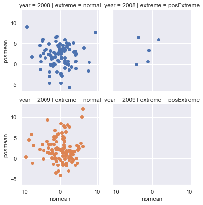
- pairs plot
sns.set(style="ticks", color_codes=True)
## make a pair plot
columns = ['Happiness_Score','Economy_(GDP_per_Capita)', 'Family', 'Health_(Life_Expectancy)',
'Freedom', 'Trust_(Government_Corruption)']
axes = sns.pairplot(df,vars=columns,hue="Year",palette="husl")
- correlation matrix plot
# Compute the correlation matrix
corr = df.corr()
# Generate a mask for the upper triangle
mask = np.triu(np.ones_like(corr, dtype=np.bool))
# Set up the matplotlib figure
f, ax = plt.subplots(figsize=(11, 9))
# Generate a custom diverging colormap
cmap = sns.diverging_palette(220, 10, as_cmap=True)
# Draw the heatmap with the mask and correct aspect ratio
sns.heatmap(corr, mask=mask, cmap=cmap, vmax=.3, center=0,
square=True, linewidths=.5, cbar_kws={"shrink": .5})